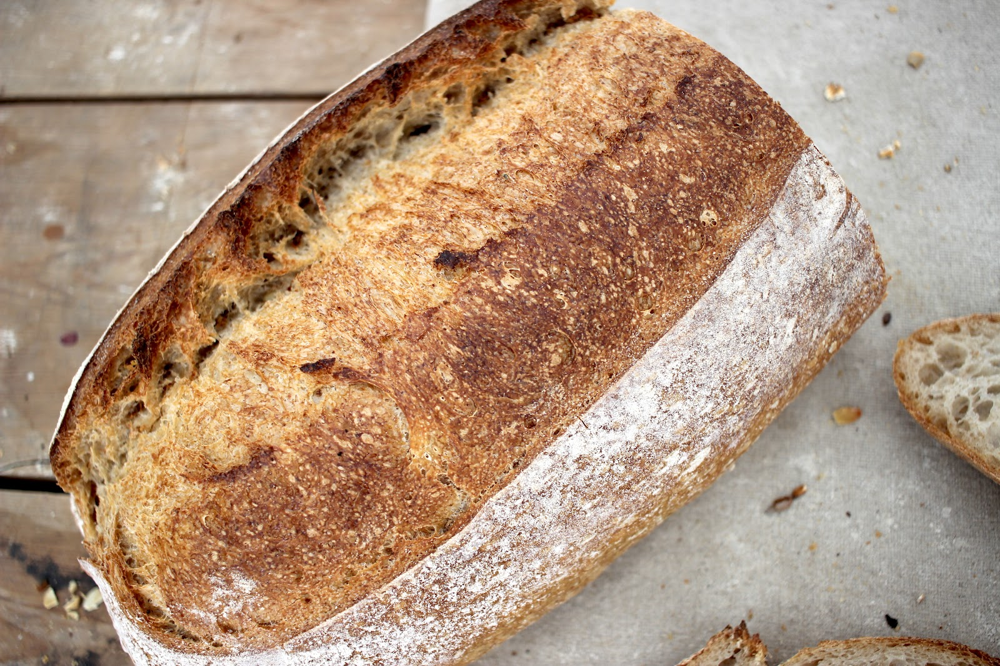
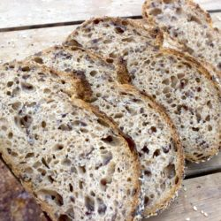
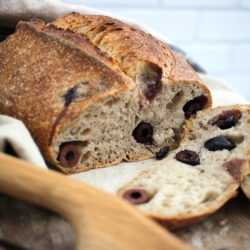
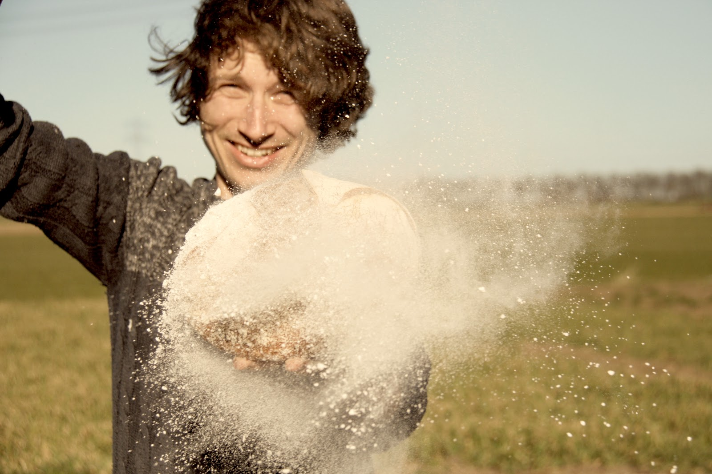
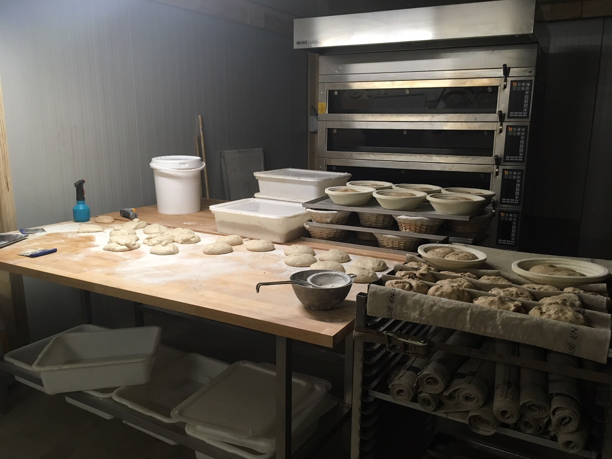

Goed brood laat zich niet haasten.
Goed brood wil tijd en aandacht. Daarom blijft dit bij mij buiten de deur:
broodverbeteraarsbakkersgistsnelle kneedmachines
Wat overblijft: natuurlijke gisten, biologisch steengemalen meel en een stenen vloer om op te bakken.


Zuurdesem op z'n Frans
Ik gebruik de (zuur)desem in een jong stadium en maak het deeg warm aan. Daardoor voeren de zoete smaken de boventoon. De desem zorgt voor een smaakvolle korst en een luchtige, veerkrachtige kruim.
Proeven is geloven.
Bestel op tijd, dan ligt het voor je klaar.
Goed brood heeft tijd nodig. Je brood ligt op de gekozen dag verpakt voor je klaar bij Stadsboerderij Caetshage.
- Bestel voor maandag 22:00
- woensdag
- Bestel voor donderdag 22:00
- zaterdag

Geen tijd meer gehad om te bestellen? Meestal ligt er bij de winkel van Caetshage nog voldoende in de losse verkoop.
Niet besteld? Hier ligt het los.
Culemborg
- Stadsboerderij Caetshage
- Bijbio Naturijn
- Besseling Deli
Asperen
Lingeloods Paradijs
Wil je zeker weten dat je niet mis grijpt? Reserveer dan via de winkel bij jou in de buurt, of bestel hier je brood.

Hallo! Ik ben Sam Batink.
Deze hobby liep al snel uit de hand.
Ik ben geschoold als cultureel antropoloog en richtte zelfoogsttuin Tuinen van Hartstocht op. Na een cursus desembrood bakken en het bouwen van een houtgestookte broodoven begon ik op zaterdag brood te bakken voor mijn gezin en de leden van de tuin.
Ik schoolde me om bij Jorisbrood, Bakery Institute en Ecole Internationale de Boulangerie, en verhuisde eind 2018 naar Culemborg om bakkerij KRUIM te beginnen.
Beter brood voor je gasten.
KRUIM levert ook aan diverse horeca. Neem contact op voor de mogelijkheden.
